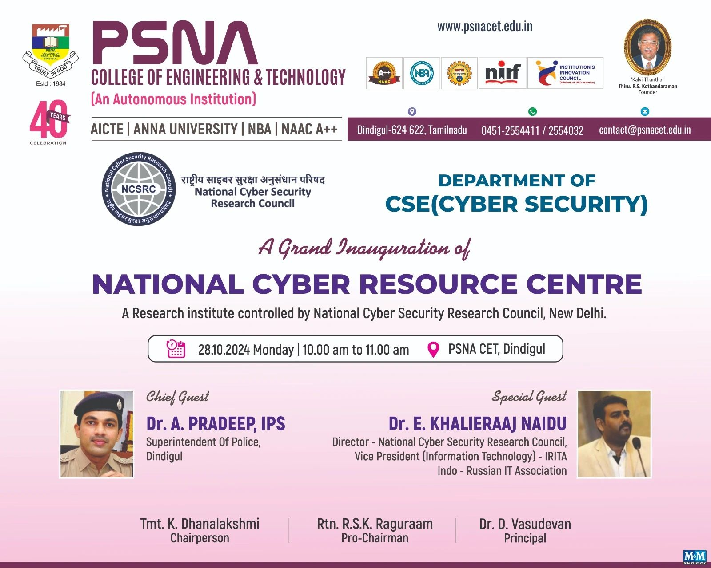
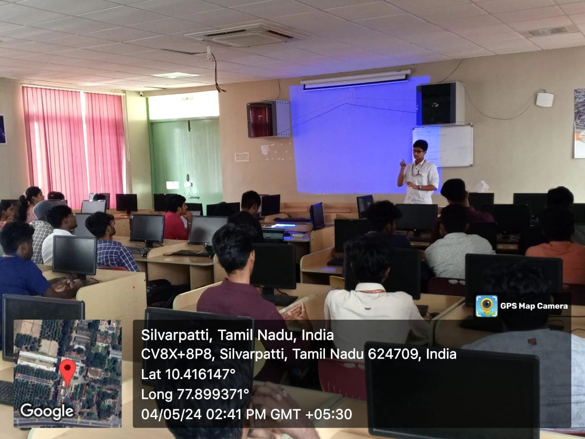
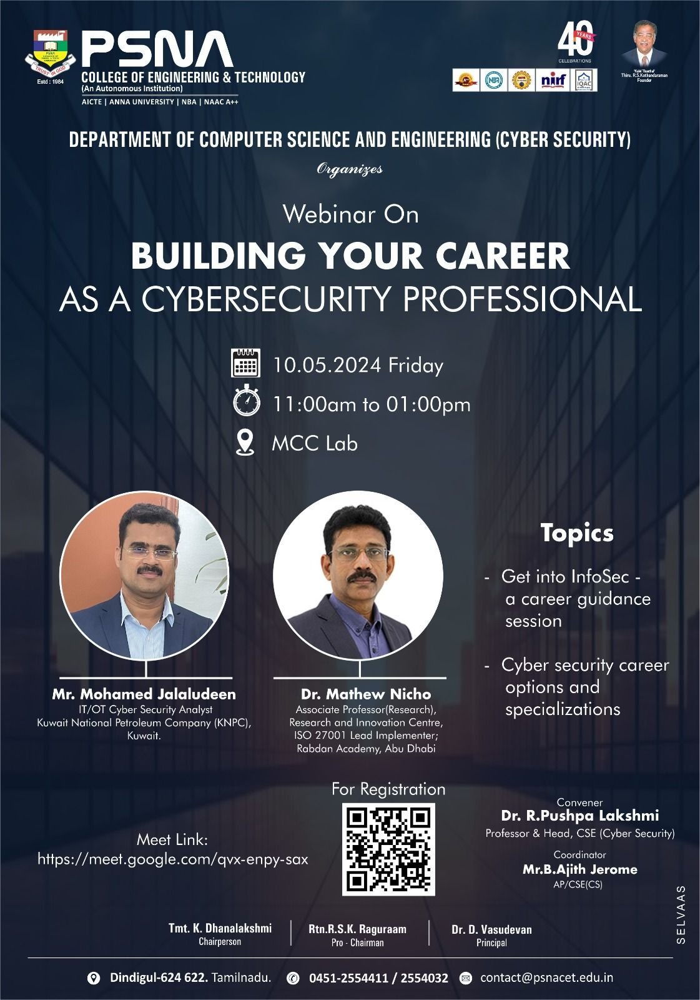
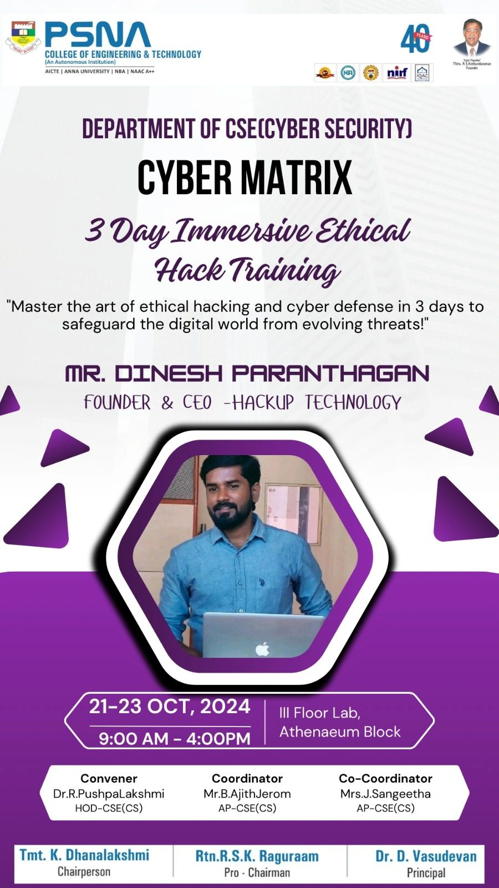
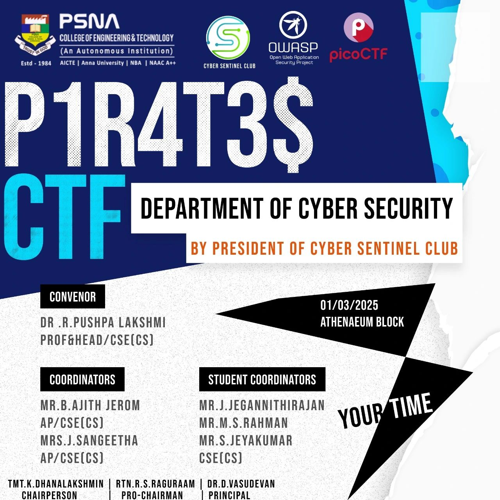
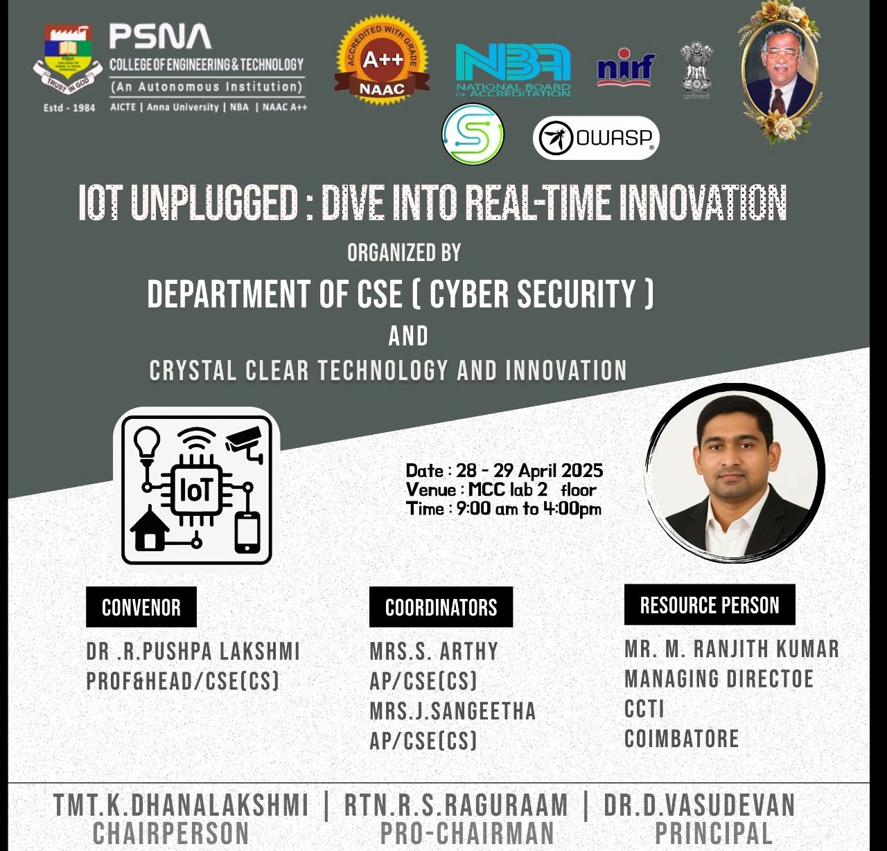

Inauguration
Club Inauguration
Department of CSE (CYBER SECURITY) inaugurated a club titled “OWASP Club” on January 01, 2024 at Shannon Hall. The students of CSE(CS), ECE, CSE, IT, BME, and EEE attended the event.
Mr. Ashok Kumar Mohan, Founder & CEO OWASP (Madurai) & Cyber Forensic Lead Consultant, was the resource person. He discussed the importance of cybersecurity and the evolving challenges in the field of cyber forensics, urging students to stay updated and actively engage in ethical hacking practices.
Events
Cyber Awareness
Ethical Hacking Hands-on Training
Webinar on Building Career As a CyberSecurity Professional
"Cyber Matrix"- Three day immersive Ethical Hack Training program"
"P1R4T3$ CTF - Cybersecurity Challenge"
"Workshop on IoT Unplugged: Dive into Real-Time Innovation"
Faculty Coordinator
Mrs. J. Sangeetha
Assistant Professor,
Department of CSE (Cyber Security)
Email: sangeethajcys@psnacet.edu.in
Phone: 9551326846
Student Coordinators
Rahman M.S
III Year CSE (Cyber Security)
Harshini Priya R
III Year CSE (Cyber Security)
Sanjay M
III Year CSE (Cyber Security)
Sakthi Priya G
III Year CSE (Cyber Security)
Objective
The OWASP Club at PSNA CET aims to build a strong community of students passionate about cybersecurity, ethical hacking, and secure software development.
- Promote Cybersecurity Awareness: Spread awareness about current cybersecurity threats, best practices, and secure coding techniques.
- Hands-on Learning and Skill Development: Capture The Flag (CTF) competitions, secure coding labs, workshops.
- Encourage Open-Source Contribution: Contributions to OWASP’s projects and tools.
- Bridge Academia and Industry: Webinars and expert talks with professionals.
- Cultivate Ethical Hacking Practices: Responsible hacking and vulnerability disclosure.
- Build Cyber Enthusiast Community: Support knowledge sharing and collaboration.
- Promote Women in Cybersecurity: Special events for inclusion and diversity.